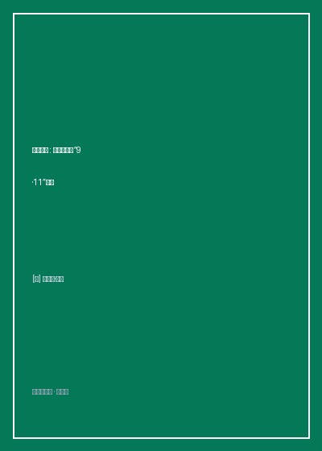

《末日巨塔》

总体观点
9·11恐怖袭击并非偶发的疯狂暴行，而是源于二十世纪中叶阿拉伯世界世俗民族主义溃败后、伊斯兰原教旨极端思潮在独裁监狱与阿富汗圣战泥潭中逐步异化发酵的历史恶果。赛义德·库特卜的思想种子在扎瓦希里和本·拉登手中最终结出了全球恐怖主义的毒瘤。
详细揭示基地组织内部的复杂人性、权力倾轧与战略演进。本·拉登利用其亿万家产、宗教名望与媒介营销天才，将分散的伊斯兰游击队整合为一个拥有严密加盟制度与跨国资金洗钱通道的现代化暴力企业，巧妙利用不对称作战诱导西方霸权深陷中东战火泥潭。
刺破美国情报系统在官僚主义内耗下的致命失灵。联邦调查局（FBI）反恐探员奥尼尔早已凭借敏锐直觉锁定了恐袭阴谋，但中央情报局（CIA）出于部门利己主义拒绝分享关键劫机犯入境情报，导致原本完全可以避免的世贸双子塔惨剧以最荒诞悲壮的形式沦为现实。
核心观点
-
1. 现代圣战思想的精神渊源
埃及知识分子赛义德·库特卜在目睹美国社会世俗物质主义后的精神幻灭，回国后在纳赛尔政权的严刑拷打下写就《路标》，将一切世俗政权定性为‘新蒙昧社会’，为后继者的极端暴恐提供了自洽的宗教学合法性借口。
库特卜在狱中遭受酷刑与犬吠折磨，写出激进宣言，认定哪怕是自称穆斯林的统治者只要不完全实行沙里亚教法就可以被宣布为叛教者并处死。 -
2. 阿富汗战争作为极端势力的熔炉
苏联入侵阿富汗吸引了成千上万来自沙特、埃及等阿拉伯国家的志愿圣战者。美国中情局与沙特情报部门在幕后提供资金与毒刺导弹，无意中为基地组织孵化出了一支经历现代化战争洗礼且不可逆转的跨国武装骨干军团。
年轻富有的本·拉登在白沙瓦建立‘服务营’，用推土机在阿富汗崇山峻岭中开凿坚固防御洞穴，赢得了大批阿拉伯老兵狂热的个人忠诚。 -
3. 远方敌人战略与全球恐怖袭击转型
在刺杀埃及总统萨达特和颠覆沙特王室屡屡受挫后，基地组织智囊扎瓦希里与拉登达成共识：改打‘近方敌人’（中东政权）为打击庇护它们的‘远方敌人’（美国），企图通过重创美国本土迫使美军撤出中东圣地。
1998年基地组织几乎在同一时刻用卡车炸弹引爆美国驻肯尼亚和坦桑尼亚大使馆，造成数百人死亡，正式向美国公开宣战并登上全球通缉榜首。 -
4. FBI与CIA的部门墙壁垒悲剧
冷战遗留的情报体制将国内外职责严格割裂。CIA在海外截获了基地组织吉隆坡秘密会议纪要与两名骨干持美国签证飞往洛杉矶的关键情报，却对专职国内执法的FBI严守秘密，直接导致追捕窗口彻底关闭。
FBI首席反恐专家约翰·奥尼尔（John O'Neill）在华盛顿多次拍桌咆哮要求中情局移交基地组织潜伏人员档案，却屡遭中情局官员以‘情报来源保密’为由冰冷拒绝。 -
5. 命运弄人的悲剧英雄与预言实现
奥尼尔因直率性格与官僚体系格格不入被迫在2001年8月从FBI退休，转任纽约世界贸易中心安保主管。上任仅两周，9·11恐袭爆发，他在他警示了数年的双子塔倒塌废墟中壮烈牺牲，成为整场世纪悲剧最震撼人心的注脚。
2001年9月10日晚，奥尼尔在曼哈顿餐馆与好友聚餐时仍忧心忡忡地表示‘拉登必定会发动一次前所未有的打击’，次日晨便随世贸南塔坍塌殉职。
全书结构
-
第一部 殉道者：极端思想的破土与催生
追溯赛义德·库特卜的思想轨迹与埃及圣战组织的建立，刻画艾曼·扎瓦希里在开罗贵族社区与牢狱酷刑中的激进化转变。
扎瓦希里出身开罗名医世家，青年时代投身暗杀行动，在托拉监狱遭受毒打后背叛同袍的耻辱感彻底扭曲其心智。 -
第二部 游侠：阿富汗风云与基地创立
记录本·拉登从沙特建筑业巨头贵公子转变为阿富汗圣战英雄的过程，分析苏军撤退后基地组织如何建构全球反美网络。
海湾战争爆发后沙特国王接纳美军驻扎，拉登视为奇耻大辱，公开与沙特王室决裂流亡苏丹并创建横跨全球的农业与建筑壳公司洗钱网络。 -
第三部 巨兽：美国情报反恐与宿命追猎
引入主角FBI反恐主管约翰·奥尼尔，展现这位脾气暴躁但直觉惊人的特工如何率领‘I-49’反恐小组调查东非使馆爆炸案与科尔号驱逐舰袭击。
奥尼尔在也门亚丁港调查科尔号遇袭现场，面对也门当局的重重刁难与美国驻也门大使的行政掣肘，带枪在航母上设立流动指挥部。 -
第四部 倒塌：劫机者潜入与双子塔终局
倒计时记录阿塔等十九名劫机犯在德国汉堡结社、赴美学习飞行驾校的隐秘轨迹，再现两部门情报断层与世贸中心的最终灾难。
还原穆罕默德·阿塔在佛罗里达飞行学校学习时只要求学习转弯而不学起降的离奇表现，以及警报未能传达到空防司令部的致命延误全过程。